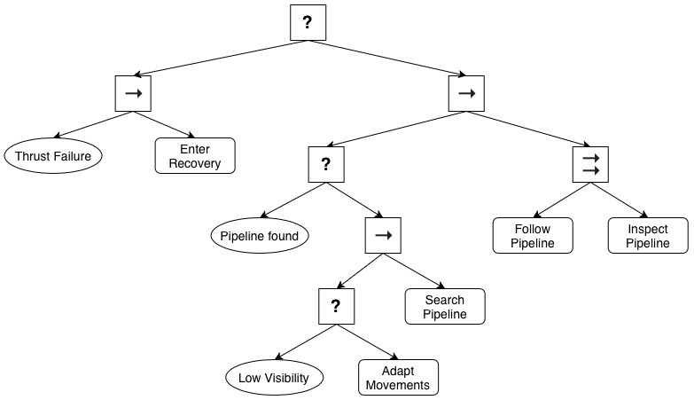
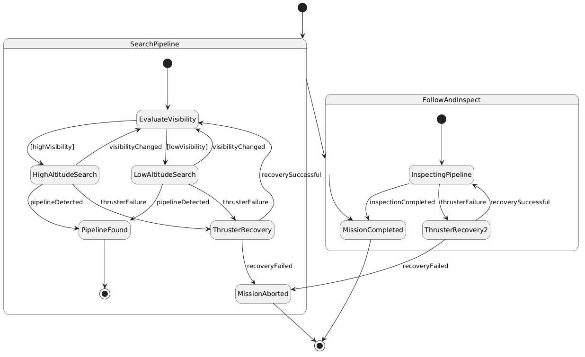
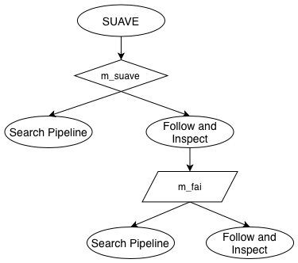
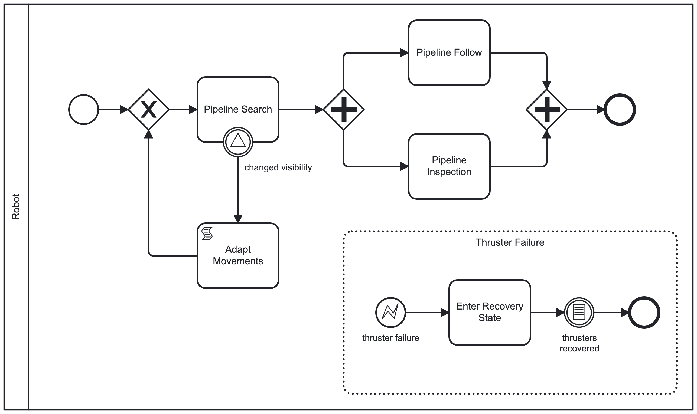

The use case in this exemplar is about an AUV inspecting pipelines located on a seabed. Its mission consists of two sequential tasks, (T1) searching for the pipeline, then (T2) simultaneously following and inspecting the pipeline. When performing its mission, the AUV is subject to two sources of uncertainty that could trigger self-adaptation: (U1) thruster failures and (U2) changes in water visibility. U1 arises from the possibility of the AUV’s thrusters failing at runtime, which may cause the AUV to move unexpectedly. This is relevant for both T1 and T2. To overcome U1, the managed subsystem of the AUV contains functional alternatives. When one or more thrusters fail, it is possible to enter a recovery state in which the thrusters are recovered. U2 influences the maximum distance at which the AUV can visually perceive objects. This is relevant for T1, higher water visibility allows the AUV to search for the pipeline at higher altitudes, resulting in a larger field of view and the possibility of discovering the pipeline faster. On the other hand, if the water visibility is low, the AUV has to move closer to the seabed to search for the pipeline, which limits its field of view and therefore may lead to a longer time to discover the pipeline. Thus, changing the altitude of the AUV provides functional alternatives for dealing with U2.
Silva, Gustavo Rezende, et al. SUAVE: an exemplar for self-adaptive underwater vehicles. 2023 IEEE/ACM 18th Symposium on Software Engineering for Adaptive and Self-Managing Systems (SEAMS). IEEE, 2023.



